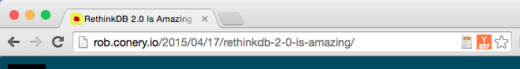

Jumping back and forth between the Hacker News front page, articles, and discussion can be a poor experience.
newsbar makes it easy to access the comments from Chrome's omnibox in one click, as soon as you've finished reading.
The number of votes the article has received are displayed to make it easy to discover the great discussions on Hacker News, even if you arrive at an article from outside HN.
newsbar only appears on pages with related articles on HN.
How it works
newsbar searches using the angolia api to find matches for the page url.
It renders the vote count into a canvas tag, on top of the HN logo.
Contributing
A simple project, but if you have any ideas, send a PR!